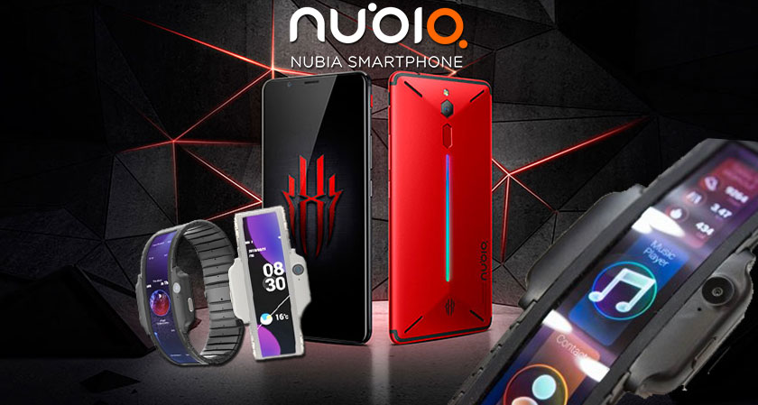
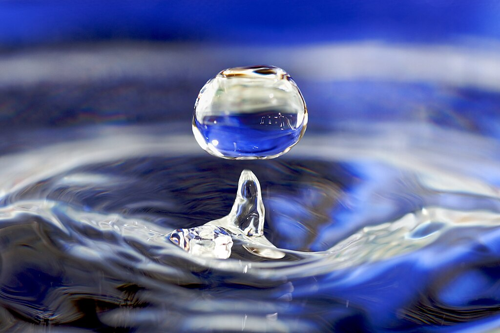

WELCOME TO KURT'S PERSONAL WEBSITE
Click the Humberger icon to explore my website.
...
Curlee and Sarah Discaya
Pacifico "Curlee" Discaya II (born May 15, 1975) and Cezarah Rowena "Sarah" Cruz Discaya (born November 10, 1976) are Filipino businesspeople. The married couple are associated with the construction firms Alpha and Omega Construction and St. Gerrard Construction Corporation, which were labeled as among the top contractors for various flood control projects during the Rodrigo Duterte and Bongbong Marcos administrations.
Sarah Discaya was born on November 10, 1976, in London, England. Her parents are both overseas Filipino workers;[1][2][3] her mother worked as a chambermaid, while her father was a waiter.[4] In a 2025 Senate inquiry, Discaya described her Filipino father as being a "contractor before for LGU".[5] She professed that she lived a middle-class life in the United Kingdom.Pacifico "Curlee" Discaya II, the eventual husband of Sarah, was born May 15, 1975.
...
IPHONE 17
The iPhone 17 features a 6.3-inch Super Retina XDR display, featuring Pro Motion that offers an adaptive refresh rate of 120Hz. The always-on display will show users the time, on-screen widgets and Live Activities at a glance, but drop the refresh rate down to 1Hz when not in use.
Sarah Discaya was born on November 10, 1976, in London, England. Her parents are both overseas Filipino workers;[1][2][3] her mother worked as a chambermaid, while her father was a waiter.[4] In a 2025 Senate inquiry, Discaya described her Filipino father as being a "contractor before for LGU".[5] She professed that she lived a middle-class life in the United Kingdom.Pacifico "Curlee" Discaya II, the eventual husband of Sarah, was born May 15, 1975.

...
Nubia Technology
Nubia Technology, founded in 2012, is a prominent Chinese smartphone manufacturer known for its innovative products and design-focused approach. Company Background Nubia Technology Co., Ltd. was established in 2012 as a subsidiary of ZTE Corporation. It became an independent company in 2015, following significant growth and development in the smartphone market. The name "Nubia" is inspired by an ancient civilization, symbolizing beauty and innovation. The company aims to provide high-quality smartphones that blend advanced technology with appealing designs. Growfers
Nubia is recognized for its cutting-edge technology and has recently launched AI-powered flagship smartphones, including the Nubia Z60 Ultra Leading Version and Nubia Z60S Pro. These devices feature advanced AI capabilities, exceptional imaging technologies, and powerful performance, driven by Qualcomm's Snapdragon 8 Gen 3 processor. The company's philosophy, "Be yourself," emphasizes empowering users to express their individuality through technology. 
...
WATER
Water is an inorganic compound with the chemical formula H2O. It is a transparent, tasteless, odorless,[c] and nearly colorless chemical substance. It is the main constituent of Earth's hydrosphere and the fluids of all known living organisms in which it acts as a solvent. Water, being a polar molecule, undergoes strong intermolecular hydrogen bonding which is a large contributor to its physical and chemical properties.[20] It is vital for all known forms of life, despite not providing food energy or being an organic micronutrient. Due to its presence in all organisms, its chemical stability, its worldwide abundance and its strong polarity relative to its small molecular size; water is often referred to as the "universal solvent".
Because Earth's environment is relatively close to water's triple point, water exists on Earth as a solid, a liquid, and a gas.[22] It forms precipitation in the form of rain and aerosols in the form of fog. Clouds consist of suspended droplets of water and ice, its solid state. When finely divided, crystalline ice may precipitate in the form of snow. The gaseous state of water is steam or water vapor. 
...
BULLDOG
The Bulldog is a British breed of dog of mastiff type. It may also be known as the English Bulldog or British Bulldog. It is a stocky, muscular dog of medium size, with a large head, thick folds of skin around the face and shoulders and a relatively flat face with a protruding lower jaw. Selective breeding for appearance has led to increased susceptibility to health problems including brachycephaly, hip dysplasia, heat sensitivity and skin infections. The dogs may not be bred in Norway or the Netherlands, because of concerns about their quality of life.
The modern Bulldog was bred as a companion dog from the Old English Bulldog, a now-extinct breed used for bull-baiting until that was outlawed under the Cruelty to Animals Act of 1835. The Bulldog Club (in England) was formed in 1878, and the Bulldog Club of America was formed in 1890. While often used as a symbol of ferocity and courage, the modern Bulldog is generally a friendly, amiable dog. It is commonly kept as a pet; in 2013 it was the twelfth-most-frequently registered breed worldwide.<